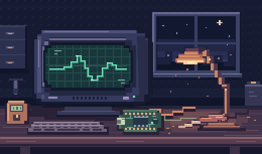

HARDWARE
小屏硬件实验
用 ESP-IDF 驱动 AMOLED 小屏，把界面从电脑屏幕搬到手边的硬件上。
试试像素示波器
PROJECTS
从一块屏幕到一个网页
PLAYGROUND
切换波形，再拖动频率滑杆，看看屏幕上的信号怎么变。
浏览器模拟 · 无需连接设备NOTES
怎样知道一个设计和它要解决的问题合不合拍？可以先列出具体的不合适之处，再看哪些问题常常一起出现。分好组，才知道该从哪里动手。
能显示画面之后，试着只刷新变化的区域。让文字和图形动起来，同时观察屏幕有没有撕裂或闪烁。
ABOUT
我喜欢把想法做成能亲手试一试的东西。这里是放这些小实验的地方。